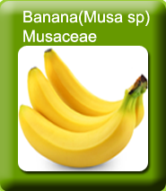 |
| Introduction |
| Banana is the fruit of a plant of the genus Musa (family Musaceae), which is cultivated primarily for food and secondarily for the production of fibre used in the textile industry are also cultivated for ornamental purposes. Almost all the modern edible parthenocarpic bananas come from the two wild species – Musa acuminataMusa balbisiana. The scientific names of bananas are Musa acuminata, Musa balbisiana or hybrids of Musa acuminata and balbisiana, depending on their genomic constitution.Bananas are vigorously growing, monocotyledonous herbaceous plants.The banana is not a tree but a high herb that can attain up to 15 meters of height. The cultivars vary greatly in plant an d fruit size, plant morphology, fruit quality and disease and insect resistance. Most bananas have a sweet flavor when ripe; exceptions to this are cooking bananas and plantains. Plantains are hybrid bananas in which the male flowering axis is either degenerated, lacking, or possess relicts of male flowers. Plantains are always cooked before consumption and are higher in starch than bananas. The two groups of plantains, French and Horn, produce fewer fruit per plant than sweet bananas. The groups differ in whether the male parts of the inflorescence are present or absent. |
|
| Varieties |
Dessert
Robusta, Dwarf Cavendish, Grand Naine, Rasthali, Vayal vazhai, Poovan, Nendran, Red Banana, Karpooravalli, Co.1, Matti, Sannachenkadali, Udayam and Neypoovan are popular varieties in banana. Cavendish groups are generally prefered in export market.
Culinary
Monthan, Vayal vazhai, Ash Monthan and Chakkia are cultivated for culinary purpose. Nendran is a dual purpose variety used for dessert and culinary.
Hill areas
The popular varieties of bananas suitable for hilly areas are Virupakshi, Sirumalai and Namarai. Red Banana, Manoranjitham (Santhana vazhai) and Ladan are also cultivated in hills. |
| Karpuravalli 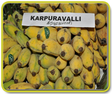 |
Rasthali 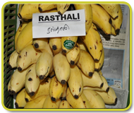 |
|
| Red Banana 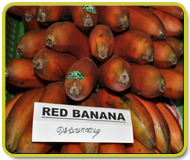 |
Grandnine 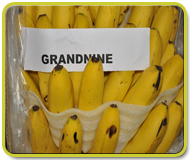 |
|
Soil and Climate
Well drained loamy soils are suitable for banana cultivation. Alkaline and saline soils should be avoided.
| Season of planting |
| Wet lands |
Garden lands |
Hill Banana |
Padugai lands |
| Poovan, Rasthali, Monthan, Karpooravalli and Neypoovan can be cultivated during February – April. Nendran and Robusta can be cultivated during April – May. |
Banana can be cultivated in garden lands during January – February and November – December. |
April – May (lower Palani hills), June – August (Sirumalai) are the suitable seasons for cultivating hill banana. |
In Padugai lands, the crop can be cultivated during January – February and August – September. |
Selection and pre-treatment of suckers
Select sword suckers of 1.5 to 2.0 kg weight which are free from diseases and nematodes. Trim the roots and decayed portion of the corm, cut the pseudostem leaving 20 cm from the corm and grade the suckers to size. To avoid wilt disease in Rasthali, Monthan, Virupakshi and other wilt susceptible varieties, infected portions of the corm may be pared and dipped for 5 minutes in 0.1% Emisan solution (1 g in 1 lit of water). Pralinage is done with 40 g of Carbofuran 3 G granules per sucker. (Dip the corm in slurry solution containing 4 parts clay plus 5 parts water and sprinkle Carbofuran to control nematodes). Alternatively,shade dry for atleast 24 hours and plant. Sow Sunhemp on 45th day; incorporate it after about a month.This operation reduces nematode build up. Use tissue cultured banana plants with 5-6 leaves. At the time of planting, apply 25 g Bacillus Subtils / plant.
Field preparation
Wet lands
No preparatory cultivation is necessary.
Garden land
2 – 4 ploughings are required before planting.
Padugai
One deep spade digging is essential.
Hill Banana
Clean the jungle and construct contour stone walls before planting. Digging Pits
Wet lands
Place the suckers at ground level and earth up at stages. |
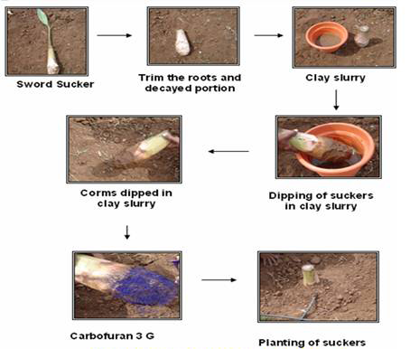
|
| Sucker treatment and planting |
Spacing
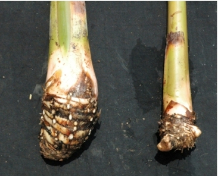 |
| S.No. |
System of Planting |
Planting Distance |
Plant population /ha |
| 1. |
Dwarf Cavendish |
1.5 x 1.5 |
4440 |
| 2. |
Robusta and Nendran |
1.8 x 1.8 |
3080 |
| 3. |
Rasthali, Poovan, Karpooravalli, Monthan |
2.1 x 2.1 |
2260 |
| 4. |
Paired row |
1.2 x 1.2 x 2.0 |
5200 |
| 5. |
2-Suckers /hill |
1.8 x 3.6 |
3200 |
| 6. |
3-Suckers/hill |
1.8 x 3.6 |
4800 |
|
High density planting can be adopted for higher productivity. Plant 3 suckers / pit at a spacing of 1.8 x 3.6m (4600 plants/ha) for Cavendish varieties and 2 m x 3 m for Nendran (5000 plants/ha).
| 1 sucker / pit at 2x2 m |
3 suckers / pit at 3.6x3.6 m |
|
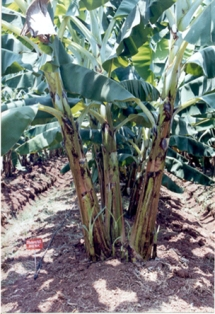 |
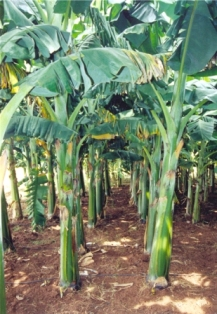 |
3- Plants /Hill
1.8 X 3.6 m (4800 pi/ha) |
Paired row system
1.2x1.2x2.0m (5200 pl/ha |
|
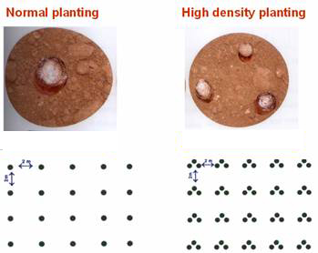 |
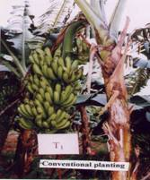 |
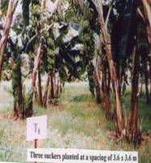 |
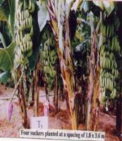 |
Normal planting
(2.0 x 2.0 m) |
3 suckers/pit
(3.6 x 3.6 m) |
4 suckers/pit
(1.8 x 3.6 m) |
Irrigation
Irrigate immediately after planting; give life irrigation after 4 days; subsequent irrigations are to be given once in a week for garden land bananas and once in 10 – 15 days for wetlands. Irrigate the fields copiously after every manure application. Use drip irrigation @ 5-10 litres/plant/day from planting to 4th month, 10-15 litres/plant/day from 5th to shooting and 15 litres /plant/day from shooting to till 15 days prior to harvest.
Drip Irrigation Schedule
| S.No |
Crop Growth Stage |
Duration (Weeks) |
Quantity of Water
(1/Plant) |
| 1. |
After Planting |
1-4 |
4 |
| 2. |
Juvenile Phase |
5-9 |
8-10 |
| 3. |
Critical Growth Stage |
10-19 |
12 |
| 4. |
Flower bud differentiation Stage |
20-32 |
16-20 |
| 5. |
Shooting Stage |
33-37 |
20 and above |
| 6. |
Bunch Development Stage |
38 x 50 |
20 and above |
|
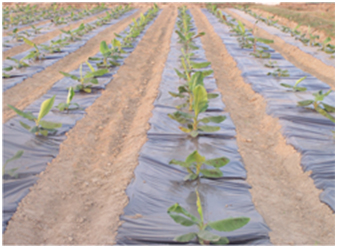 |
Intercropping
Leguminous vegetables, beetroot, elephant foot yam and sunhemp can be grown as intercrops. Avoid growing cucurbitaceous vegetables. |
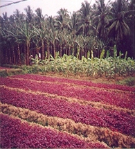 |
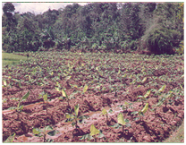 |
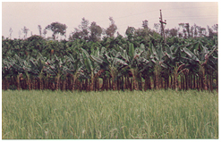 |
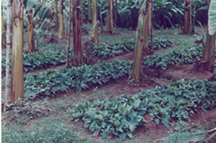 |
|
Application of fertilizers
General recommendations for garden land, wetland banana and hill bananas
| Details |
N |
P |
K |
Garden land
Varieties other than Nendran
Nendran |
110*
150 |
35*
90 |
330*
300 |
Wetland
Nendran
Rasthali
Poovan, Robusta |
210
210
160 |
35
50
50 |
450
390
390 |
|
Hill bananas
After forming semicircular basins on uphill side, apply 375 g of 40:30:40 NPK mixture, plus 130 g muriate of potash per clump per application during October, January and April. Preceding the chemical fertilizer application, apply Azospirillum and Phosphobacterium @ 20 gm each at planting and 5th month after planting.
Apply N as Neem coated urea. Apply N and K in 3 splits on 3rd, 5th and 7th month, Phosphorous at 3rd month of planting. Apply 20 g in each of Azospirillum and Phosphobacteria during planting and five months after planting. (This should be applied prior to chemical fertilizer application).
The fertigation technique must be followed for maximizing the productivity. Apply 200:30:300 g N: P2O5 : K2O / plant using water soluble fertilizers along with 25 litres of water/day. For economizing the cost of fertilizers, fertigate using normal fertilizers (Urea and Muriate of potash) with 50% of the recommended dose along with recommended dose of phosphorus as basal at 2nd month after planting. Fertigate at weekly intervals as per the following schedule. |
|
* For Tissue culture banana, apply 50% extra fertilizers at 2nd, 4th, 6th and 8th month after planting.
Fertigation Scheduling
| Stage |
Units / day |
Kg/ha/day |
| N |
P2O5 |
K2O |
N |
P2O5 |
K2O |
| Days after Planting |
| 1- 150 days |
3 |
2 |
1 |
3.24 |
0.82 |
1.03 |
| 151 - 240 days |
1 |
3 |
2 |
1.08 |
1.23 |
2.06 |
| 241 - 270 days |
1 |
1 |
2 |
1.08 |
0.41 |
2.06 |
| 271 - 360 days |
0 |
0 |
3 |
0.00 |
0.00 |
3.08 |
|
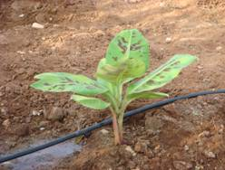 |
Fertigation for tissue culture banana
After cultivation
Garden Land
Digging at monthly intervals and earthing up of soil will facilitate better establishment of plants. Desuckering should be done at monthly intervals. The dry and diseased leaves are removed and burnt to control the spread of leaf spot diseases. Male flowers may be removed a week after opening of last hand. In Robusta banana, floral ruminants may be removed a week after opening of the last hand to avoid ‘fingertip disease’. The plants at flowering stage may be propped. Cover the peduncle with flag leaf to prevent main stalk end rot. Cover the bunch with banana leaves to avoid sunscald. Polythene bunch cover will improve the external appearance of banana fruits. |
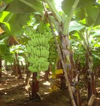 Propping / Support |
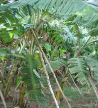 |
|
Wetland
Form trenches in between alternate rows and cross trenches at every 5th row. The trenches are periodically deepened and the soil is spread over the bed. Surface diggings may be given at bi-monthly intervals and desuckering at monthly intervals. Remove the male flower a week after opening of last hand. |
Prop plants at or prior to flowering. Cover the peduncle with flag leaf and the bunch with leaves to avoid sunscald. For ratoon crops in respect of Poovan, Monthan and Rasthali allow the follower at flowering stage of the mother plant and remove the other suckers during harvest.
Perennial banana
Surface digging should be done once in two months. One deep digging may be given during January – February. Other operations should be done as similar in garden land.
Hill banana
Give four forkings in January, April, July and October. Remove outer sheaths to keep the corm inside the soil and ward off borer. Maintain two bearing plants and two followers per clump along the contour.
Growth regulators
To improve the grade of bunches 2, 4-D at 25 ppm (25 mg/lit) may be sprayed on Poovan and Co 1 banana after the last hand has emerged. This will also help to remove seediness in Poovan variety. Spray CCC 1000 ppm at 4th and 6th month after planting.
Micronutrients
Spray micronutrients viz., ZnSO4 (0.5%), FeSO4 (0.2%), CuSO4 (0.2%) and H3BO3 (0.1%) and 3, 5 and 7 MAP to increase yield and quality of banana.
| Deficiency Symptoms |
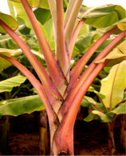 |
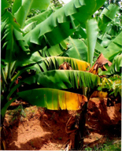 |
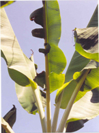 |
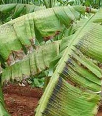 |
| Nitrogen(N) |
Potassium (K) |
Boron (B) |
Phosphorus (P) |
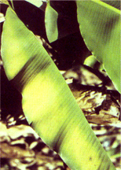 |
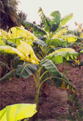 |
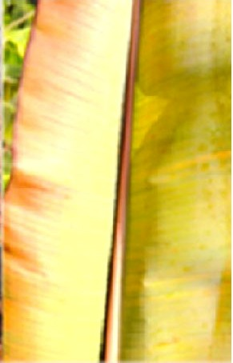 |
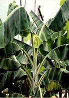 |
| Magnesium (Mg) |
Iron (Fe) |
Sulphur (S) |
Copper (Cu) |
Bunch cover for better appearance
Use transparent polyethylene sleeves with 2% (during cool season) - 4% (during summer season) ventilation to cover the bunch immediately after opening of the last hand. |
 |
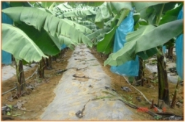 |
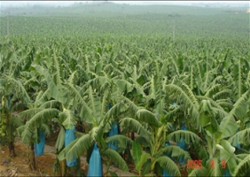 |
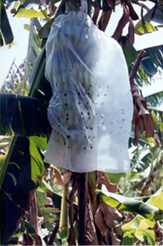 |
|
Intercropping:Leguminousvegetables, Beetroot, ElephantfootyamandSunhemp.Avoid growing Cucurbitaceous vegetables.
Plant protection
Pests
Corm weevil
Apply carbaryl 10 – 20 g/plant in the soil around the stem. |
|
Stem weevil (Odoiporus longicollis)
Remove dried leaves periodically and keep the plantation clean. Prune the suckers every month. |
| Weevil infested corm |
Weevil infested plant |
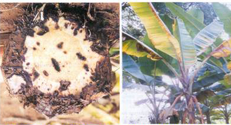 |
Alternatively,pseudostem at monthly interval from 5th to 8th month. Do not dump infected materials in the manure pit. Infected trees should be uprooted, chopped into pieces and burnt. |
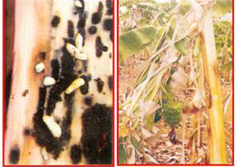
| Stem weevil infestation |
Stemweevil infested plant |
|
Banana aphid The pest is the vector for Bunchy top virus disease. Spray any one of the following systemic insecticides to control it. Phosphamidon 2 ml/lit or Methyl demeton 2 ml/lit or Dimethoate 30 EC 2 ml/lit. The spray may be directed towards crown and pseudostem base upto ground level at 21 days interval atleast thrice. ml/plant (1 ml diluted in 4 ml of water) at 45 days interval from the 3rd month till flowering is very effective. Use ‘Banana injector’ devised by the Tamil Nadu Agriculture University. .
Banana Aphid |
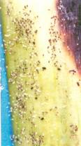 |
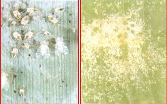 |
Thrips and Lace wing bugs
Spray Methyl demeton 20 EC @ 2 ml/lit or Phosphamidon 40 SL @ 2ml/lit.
Nematode
Pre-treat the suckers with 40 g Carbofuran 3G. If pre-treatment is not done, apply 40 g of Carbofuran around each plant one month after planting (refer selection and pre-treatment for alternate technology) or pare and dip the corm in shade dry and plant. Then grow Sunhemp after 45th day and incorporate one month later. Press mud application @ 15 t per ha one month after planting and neem cake 1.5 t per ha one month after planting will also control the nematode infestation. |
| Lace wing Bug investation |
Diseases
Sigatoka leaf spot
Remove affected leaves and burn. Spray any one of the following fungicides commencing from November at monthly interval. Carbendazim 1 g/lit., Benomyl 1 g/lit., Mancozeb 2 g/lit., Copper oxychloride 2.5 g/lit., Ziram 2 ml/lit,
Chlorothalonil 2 g/lit. Alternation of fungicides for every spray prevents fungicidal resistance. Always add 5 ml of wetting agent like Sandovit, Triton AE, Teepol etc. per 10 lit of spray fluid. |
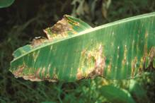 |
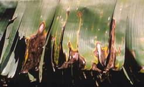 |
| Yellow Sigatoka leaf spot |
Anthracnose
- Spray copper oxychloride 0.25% or Bordeaux mixture 1% or chlorothaloail 0.2% or Carbendazim 0.1%.
- Post harvest dipping of fruits in Carbendazim 400 ppm, or Benomyl 1000 ppm.
|
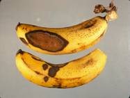
Anthracnose on ripe fruits |
Bunchy-top
The Banana Aphid Pentalonia nigronervosa is the vector of Bunchy-top virus disease. Spray Phosphamidon 1 ml/lit or Methyl Demeton 2 ml/lit to control it. The sprays may be directed towards crown and pseudostem base upto ground level at 21 days interval atleast thrice.
Use ‘Banana Injector’ devised by the Tamil Nadu Agricultural University. . |
| Bunchy top affected plant |
To prevent the disease |
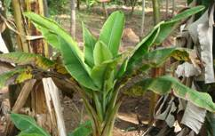 |
1.Use virus-free suckers
2.Paring and pralinage: Pare the corm and sprinkle 40 g of Carbofuran 3 G over the Corm (Before sprinkling, corm should be dipped in mud slurry).
3.Destroy virus affected plants.
Insert a gelatin capsule containing 200 mg Fernoxone (2,4 – D) into the corm 7 cm deep using capsule applicator or inject 5 ml Fernoxone solution (125 gm/lit of water) into the pseudostem by using the injection gun. The plant collapses and topples in 3 – 5 days. |
Panama Disease
Uproot and destroy severely affected plants. Apply lime at 1 – 2 kg in the pits after removal of the affected plants. In the field, Panama wilt disease can be prevented by corm injection methods. A small portion of soil is removed to expose the upper portion of the corm. An oblique hole at 45° angle is made to a depth of 10 cm. Immediately, a gelatin capsule containing 60 mg of Carbendazim or 3 ml of 2 % Carbendazim solution or capsule application for 50 mg of Pseudomonas fluorescens is injected into the hole with the help of ‘corm injector’ on 2nd, 4th and 6th month after planting.
Fusarium wilt
Management
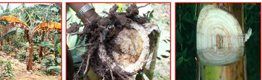
| Fusarial wilt infected plant |
Internal symptam corm |
Internal symptom pseudostem |
Freckle leaf spot
Management
- Spray copper oxychloride 0.25% or Bordeaux mixture 1%.
 |
| Freckle leaf spot on leaves and fruits |
|
Kottaivazhai in Poovan
Spray 2,4 – D at the rate of 25 ppm within 20 days after opening of last hand (1 g/40 lit/200 bunches) or 1.2 g of Sodium salt of 2,4 – D dissolved in 40 lit of water for 200 bunches.
Crop duration
The bunches will be ready for harvest after 12 to 15 months of planting.
Harvest
Bunches attain maturity from 100 to 150 days after flowering depending on variety, soil, weather condition and elevation.
Yield (t/ha/year)
| Poovan |
: |
40 – 50 |
| Monthan |
: |
30 – 40 |
| Rasthali |
: |
40 – 50 |
| Robusta |
: |
50 – 60 |
| Dwarf Cavendish |
: |
50 – 60 |
Market information
| Growing Districts |
Coimbatore, Erode, Thoothukudi, Tirunelveli, Trichy, Vellore,Kanyakumari and Karur districts |
| Major Markets in Tamil Nadu |
Trichy, Coimbatore, Theni |
| Preferred Varieties and Hybrids |
Grand Naine, Dwarf Cavendish, Robusta, Rasthali, Poovan, Nendran, Red Banana, Ney Poovan, Pachanadan, Monthan, Karpuravalli |
| Grade Specification |
The hands are graded based on the number and size of fingers in each hand.
Overripe and injured fruits are discarded.
Banana is sent to the local market as bunches. |
|